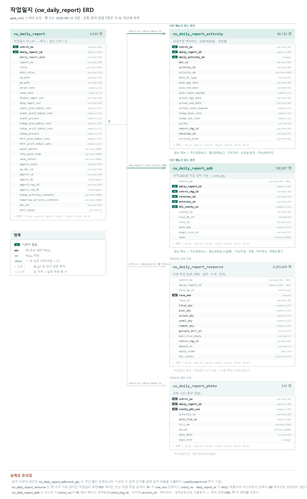
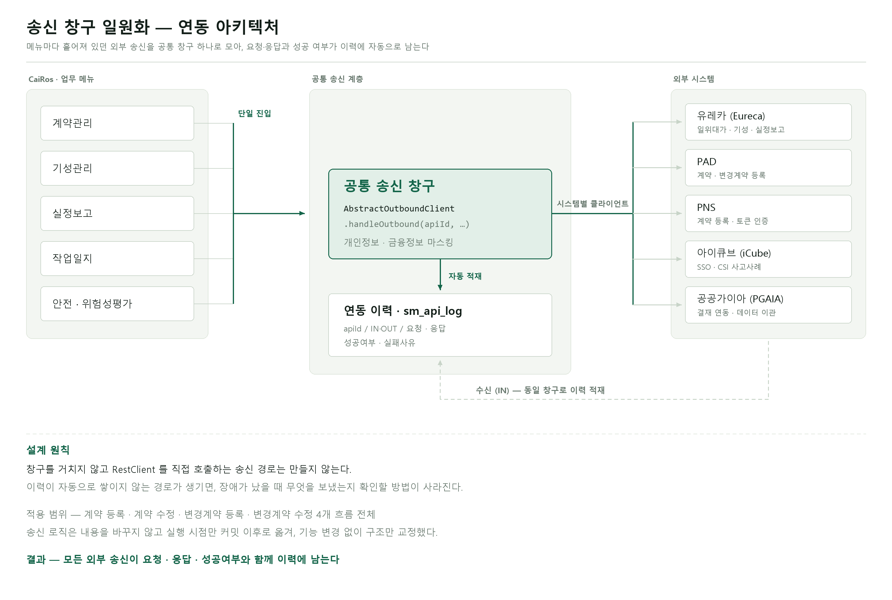
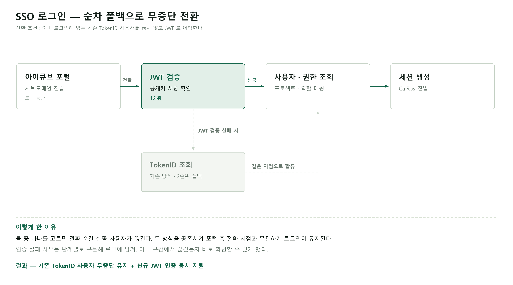

Java·Spring 기반 백엔드 개발 6년. 통화 녹취 솔루션 구축을 거쳐 현재는
건설 사업관리 플랫폼(PMIS)에서 백엔드·SSR 프론트·인프라를 병행하고 있습니다.
요구사항을 받아 구현하는 데서 멈추지 않고
업무 분석 → DB 설계 → 개발 → 운영까지 하나의 흐름으로 책임지는 방식으로 일해왔습니다.
현장에서 실제 쓰는 실무 문서를 분석해 업무 프로세스를 정의하고, DB 설계와 UML 부터 화면·API·전자결재·리포트까지 신규 도메인을 end-to-end 로 구축해왔습니다.
담당 선임과 리더의 연이은 퇴사로 시스템을 단기간에 인수받은 이후에는 개발과 함께 배포·서버 운영·장애 대응까지 맡고 있습니다. 인수 문서가 충분하지 않은 상태였기에, 코드와 운영 이력을 역추적해 시스템 구조를 다시 정리하고 그 내용을 팀이 참고할 수 있는 문서로 남겼습니다.
새로운 기술을 쓰는 것보다, 업무를 정확히 이해하고 복잡한 문제를 구조로 정리해 안정적으로 돌아가게 만드는 것에 가치를 둡니다.
Core Competency
Java & Spring 기반의 백엔드 개발자
RESTful API 를 활용한 다중 외부 플랫폼(유레카·PAD·PNS·공공가이아·아이큐브) 연동 구축·안정화
MyBatis / MapStruct 기반 데이터 접근 계층 설계 및 SQL 최적화
PostgreSQL·MariaDB·Oracle 등 다양한 RDBMS 쿼리 작성 및 튜닝 경험
Spring BootSpring FrameworkMyBatisMapStructPebble (SSR)Node.jsAngularBootstrapjQueryTUI Grid
Database
PostgreSQLMariaDBOracleDB
Server
ApacheTomcatNginx
Tooling / DevOps
GitSVNJenkinsKubernetesGradleMavenAnt
Environment
WindowsLinux (Ubuntu)
05 — Projects
프로젝트 아홉 건
카드를 누르면 업무 분석 · 개발 내용 · 문제 해결 과정을 자세히 볼 수 있습니다.
06 — Result
업무 성과
신규 도메인 end-to-end 구축
안전관리·위험성평가, 실정보고를 현장 실무 문서 분석 기반으로 요구사항 정의 → UML·DB 설계 → 화면·API·전자결재·리포트까지 직접 구축. 국토안전관리원 위험요소 DB, CSI 사고사례, SIF 데이터 설계 및 적재 포함.
대외 연동 구조 정비
흩어진 송신 경로를 공통 창구로 통합해 연동 이력 누락을 해소하고, 개인정보·금융정보 마스킹을 적용했습니다. 이름과 실체가 어긋난 연동(아이큐브 ↔ PNS)도 분리했습니다.
외부 리포트 솔루션 대체
UbiReport 를 자체 PDF 리포트 서비스로 대체해 라이선스 의존을 제거했습니다(위험성평가·작업일지·기성관리). 다건 재생성에 실시간 완료 알림을 적용했습니다.
운영 안정성 확보
SVN → Git 형상관리 전환, Jenkins 다중 서버 배포 체계 정비, 서버 8대의 디스크 용량·로그 관리, DB Lock·조회 지연 등 장애를 원인 단위로 해소했습니다.
팀 지식 자산화
결함 이력을 메뉴별 문서로 체계화하고, 재발 가능성이 확인된 것만 팀 안티패턴 목록으로 승격하는 2단 구조를 만들어 운영하고 있습니다.
인수 후 단독 운영
담당 선임·리더 퇴사 이후 개발·배포·서버 운영·장애 대응을 이어받아 서비스 중단 없이 유지하고 있습니다.
“다음 사람이 다시 분석하지 않아도 되는 상태로 남기는 것”
지난 6년 동안 제가 가장 많이 한 일은 새 기능을 붙이는 것이 아니라, 흩어진 것을 한 곳으로 모으고 어긋난 이름을 바로잡는 일이었습니다. 연동 이력이 남지 않는 경로를 없애고, 트랜잭션 안에 있던 외부 호출을 밖으로 꺼내고, 결함의 원인을 문서로 남겨 같은 실수가 반복되지 않게 했습니다.
제가 만든 코드가 잘 도는 것보다, 다음 사람이 그 코드를 다시 분석하지 않아도 되는 상태로 남기는 것을 더 중요하게 생각합니다. 앞으로도 기획·데이터·운영을 함께 볼 수 있는 시각으로 서비스의 문제를 먼저 찾아 해결하는 개발자로 일하고자 합니다.
현장에서 매일 쌓이는 작업일지 데이터가 주간·월간 공정보고, 자원투입현황, 관리기준 성과분석 대시보드로 이어집니다. 이 메뉴의 수량 하나를 잘못 잡으면 그 오차가 여러 화면의 집계로 그대로 번집니다. GaiA-CaiRos 메뉴 가운데 가장 복잡하고, 가장 중요한 메뉴입니다. 업무 분석부터 DB 설계, 개발, 운영까지 전 과정을 담당했습니다.
Environment
개발 환경
Java 21, Spring Boot 3.3.1, PostgreSQL, MyBatis, MapStruct, Pebble(SSR), TUI Grid, Spring Security, Gradle(멀티모듈), Jenkins, Git
데이터 규모
작업일지 마스터 4,330건 / 자원 실적 4,203,409행 / 대상 계약 658건 이 데이터를 참조하는 하위 메뉴 4개 — 주간·월간 공정보고, 자원투입현황, 대시보드, 기성관리
인력 · 기여도
백엔드 중심 풀스택 — 단독 개발/보수 (BE·SSR 프론트·모바일·인프라 병행) Controller → Component → Service → Mapper 레이어 아키텍처 기반 개발
업무 분석
작업일지는 “오늘 무엇을 얼마나 했는가”를 적는 문서지만, 그 숫자가 곧 공정률이고 기성 근거입니다. UI 를 정하기 전에 현업 담당자와 실제 작성 절차를 따라가며 기준부터 합의했습니다.
합의한 기준
무엇이 계획이고 무엇이 실적인가 — 두 수량을 같은 칸에 담지 않는다
실적은 어느 시점에 확정되는가 — 결재 승인 시점인가, 입력 시점인가
액티비티(공정 활동)와 CBS(내역 항목)의 수량 관계를 어느 방향으로 파생시킬 것인가
같은 작업을 두 사람이 적었을 때 무엇을 정본으로 볼 것인가
분석에서 나온 결정
실적 산정에서 전자결재 의존 제거 — 결재 승인까지 기다리면 공정률이 며칠씩 밀려 현장이 화면을 믿지 못하게 된다. 입력 즉시 반영으로 변경
보할(배분율) ↔ CBS 수량 양방향 재계산 — 한쪽만 고치면 반드시 어긋나므로 어느 쪽을 수정해도 상대가 따라오게 설계
프리마베라(Primavera) 공정 데이터 연계 — 공정표의 액티비티를 원천으로 삼아 작업일지가 임의 항목을 만들지 않게 함
작업일지 자동 생성 — 공휴일 제외, 작성자·날씨 자동 설정으로 현장 입력 부담 축소
DB 설계
계약번호와 작업일지 ID 를 공통 키로 갖는 마스터 아래에 액티비티·내역수량·자원·사진을 배치했습니다. 자원 실적이 420만 행까지 쌓이는 구조라, 조회 경로마다 계약 단위로 먼저 좁히는 것을 설계 원칙으로 잡았습니다. 작업일지 마스터를 원천으로 4개 하위 메뉴가 같은 실적 데이터를 다시 집계하며, 성능과 정합성 문제는 모두 자원 실적(420만 행) 경로에서 발생했습니다.

작업일지 ERD작업일지 개요 화면액티비티(CBS) 화면작업일지 모바일 화면
개발
수량 · 실적 로직
액티비티 보할 로직과 QDB 수량 산정 방식 개선
보할 ↔ CBS 수량 양방향 재계산, 보할 기반 자원 금일수량 계산
액티비티 추가 시 연관 CBS 항목 자동 추가
실적 산정 기준 개선(전자결재 의존 제거) 및 공정률 실시간 재계산
실적 100% 도달 시 액티비티 종료 자동 처리
화면 · 배치 · 리포트
작업일지 개요·액티비티(CBS) 화면 리뉴얼, CBS/자원 조회·저장
작업일지 자동 생성 배치 — 공휴일 제외, 작성자·날씨 자동 설정
자원 조회 방식 개선(전기·통신·소방 내역서 항목 대응)
UbiReport 를 대체하는 자체 PDF 리포트 서비스 개발
모바일 작업일지 화면 리뉴얼
문제 해결
성능목록 조회 2.1초 지연
문제
작업일지 목록과 실적변경 조회가 약 2.1초 걸려, 현장에서 화면이 멈춘 것으로 인식됨
원인
324만 행(현재 420만 행) cw_daily_report_resource 에 cntrct_no 인덱스가 없었고, 목록 쿼리의 집계 CTE 가 계약 필터 없이 전체를 집계해 Parallel Seq Scan 으로 떨어짐
해결
집계 CTE 에 계약 조건을 추가해 스캔 범위를 계약 단위로 축소 / (cntrct_no, dlt_yn) 복합 인덱스를 함께 제안하고 실행계획으로 개선 전후 확인
결과
집계 구간 998ms → 115ms (약 8.7배) / 이후 모든 대량 집계 화면에 “계약으로 먼저 좁힌다”를 점검 기준으로 적용
정합성액티비티를 지웠는데 작업내역이 되살아남
문제
금일작업 수정 화면에서 액티비티를 행별로 하나씩 삭제하면 연결된 CBS 작업내역이 일부 남음. 상단 일괄삭제는 정상이라 재현 조건을 좁히기 어려웠음
원인
행별 삭제 경로가 고아 CBS 제거와 자원 재계산을 수행하지 않았음 / 보할 재파생 로직이 수동 삭제한 액티비티 ID 를 일부 분기에서만 제외해, 삭제한 항목이 캐시된 CBS 를 통해 되살아났음
해결
행별 삭제를 일괄삭제와 동일하게 보정 / 보할 재계산의 모든 분기에서 수동 삭제 ID 를 제외해 부활 경로를 차단
결과
삭제 방식과 무관하게 작업내역·자원 수량이 일치 / 원인과 재현 조건을 결함 이력 문서에 남겨 “일괄 경로만 보정된 로직”을 점검 대상으로 등록
기성은 공사가 얼마나 진행됐는지를 근거로 공사대금을 청구하는 업무입니다. 청구 근거가 되는 실적은 작업일지에서 올라오고, 금액을 계산한 내역서와 원가계산서는 유레카가 만듭니다. 카이로스는 그 사이에서 회차를 관리하고, 받아온 내역을 결재에 올려 확정합니다. 작업일지 다음으로 외부 시스템 의존이 큰 메뉴라 연동 실패를 어떻게 다루느냐가 핵심이었습니다.
Environment
개발 환경
Java 21, Spring Boot 3.3.1, PostgreSQL, MyBatis, MapStruct, Pebble(SSR), TUI Grid, 전자결재, 자체 PDF 리포트
CAEU0013 registerPrgpymntDtls — 해당 회차의 기성내역서를 작성해 달라고 유레카에 요청
3. 작성완료 수신
CAEU0014 retrievePrgpymntDtls — 유레카가 작성한 기성내역서와 원가계산서를 받아 화면·DB 에 반영
4. 결재 · 확정
전자결재 요청 → 승인·반려. 결과는 CAEU0001 updatePrgpymntAprv 로 유레카에 통보해 양쪽 상태를 맞춘다
5. 승인 PDF
승인되면 기성 PDF 를 자동 생성해 통합문서관리에 저장 (단건 · 다건 재생성 지원)
삭제
CAEU0009 deletePrgpymnt — 기성을 지우면 유레카 쪽 내역서도 함께 정리
담당 업무
기성 관리
기성 목록 · 상세 · 등록 · 수정 · 삭제, 회차 관리, 기성 자원(투입 실적) 조회
선급금 · 공제금
선급금 지급·정산과 공제금 관리 화면·기능 개발
하도급 기성
하도급 업체별 기성 청구·지급 관리
유레카 연동
내역서 작성요청·수신·상태통보·삭제 4종 개발 및 운영 테스트, API 명세서 작성
전자결재
기성 결재요청·승인·반려 핸들러 개발, 결재취소 시 데이터 정리
리포트
UbiReport 를 대체하는 자체 PDF 서비스로 기성 리포트 전환, 다건 재생성에 실시간 완료 알림(SSE) 적용
대시보드 반영
관리기준 성과분석에 기성 집행 현황 표시
문제 해결
운영 장애운영에서 기성·계약내역서 유레카 화면이 열리지 않음
문제
운영에서 기성 화면의 「계약내역서 보기」를 누르면 유레카 화면이 뜨지 않음. 개발·테스트 환경에서는 정상이라 코드 문제로 보이지 않았음
원인
유레카는 API 를 호출하는 주소와 화면을 띄우는 주소가 다르다. 그런데 운영 설정의 eureca.contractListViewDomain·eureca.paymentListViewDomain 에 API 도메인 값이 들어가 있어, 화면 요청이 화면을 서비스하지 않는 주소로 나갔음
해결
운영 프로퍼티의 화면 열기 도메인을 실제 화면 서비스 주소로 정정 / 업무별로 열어야 하는 주소가 다른 점(기성·계약내역서 ↔ 실정보고)을 설정 키로 분리해 한쪽을 고쳐도 다른 쪽이 깨지지 않게 함
결과
운영 기성·계약내역서 화면 정상 오픈 / 환경별 도메인 설정이 4종(local·dev·test·prod)으로 정리되어 이후 도메인 변경은 프로퍼티만 고치면 됨
구조연동 실패가 업무 저장을 되돌리는 문제
문제
기성·계약 정보를 외부로 보내는 경로가 메뉴마다 흩어져 있어 어떤 건 연동 이력이 남고 어떤 건 남지 않았음. 유레카가 응답하지 않으면 업무 저장까지 함께 실패하는 흐름도 있었음
원인
각 메뉴가 REST 클라이언트를 직접 호출했고, 이력 적재가 개발자 재량이었음 / 외부 호출이 업무 트랜잭션 안에 있어 상대 시스템 상태가 우리 업무에 직접 영향을 줬음
해결
계약·기성 대외송신을 공통 창구 하나로 통합해 이력이 자동으로 쌓이게 함 / 외부 송신을 커밋 이후 실행으로 옮겨 전송이 실패해도 업무 저장은 유지되게 함
결과
모든 기성 송신이 요청·응답·성공여부와 함께 이력에 남아, 실패한 건만 골라 다시 보낼 수 있게 됨 (자세한 내용은 「시스템 API 연계」 참조)
발견 · 기록연동 이력에서 계약 삭제와 기성 삭제를 구분할 수 없다
문제
연동 이력을 보면 CAEU0009 로 남은 건이 계약 삭제인지 기성 삭제인지 알 수 없음. 장애 추적 시 어느 업무에서 나간 요청인지 특정이 안 됨
원인
계약 삭제(deleteCnstwk)와 기성 삭제(deletePrgpymnt)가 같은 인터페이스 식별값을 쓰고 있었음
판단
인터페이스 식별값은 상대 시스템과 합의한 외부 계약이라 임의로 바꾸면 유레카 쪽 처리가 깨질 수 있음. 코드를 고치지 않고 연동 인벤토리 문서에 「확인 필요」로 등재해 유레카와 합의 후 정정하도록 남김
결과
추측으로 외부 규격을 건드리지 않으면서도 문제가 잊히지 않게 기록 / 같은 기준으로 연동 전수를 훑어 확인 필요 항목을 함께 정리
계약은 모든 업무의 시작점입니다. 계약이 등록되면 그 정보가 유레카·PAD·PNS 세 시스템으로 나가고, 이후 기성·실정보고·작업일지가 모두 이 계약을 기준으로 움직입니다. 문제는 세 시스템이 같은 계약정보를 서로 다른 규격으로 요구했다는 점이었습니다. 보낼 값의 정의를 한 곳에 모아 통일하는 것이 이 작업의 핵심이었습니다.
유레카(Eureca) · PAD(PAD+S) · PNS — 계약 등록 · 수정 · 변경계약 등록 · 수정 · 삭제 · 도급사 · 하도급
데이터 규모
운영 계약 658건 — 이 계약을 기준으로 기성 · 실정보고 · 작업일지 · 공정보고가 파생된다
인력 · 기여도
백엔드 중심 풀스택 — 단독 개발/보수
규격 통일 — 무엇이 문제였나
계약 화면에서 저장 한 번을 누르면 세 시스템으로 요청이 나갑니다. 그런데 세 시스템이 요구하는 항목 이름·일시 형식·필수값·도급사 처리 방식이 모두 달랐습니다. 그래서 메뉴마다 각 시스템용 요청 값을 따로 만들고 있었고, 계약 항목이 하나 늘면 세 곳을 각각 고쳐야 했습니다. 한 곳을 빠뜨리면 그 시스템만 조용히 옛 값을 받았습니다.
통일 전
같은 계약정보인데 시스템별로 요청 값을 만드는 코드가 따로 있었다
항목이 겹치는데도 이름과 일시 형식이 서로 달라, 어느 쪽이 정본인지 코드만 봐서는 알 수 없었다
도급사를 몇 건 보내는지, 어떤 도급사를 보내는지 기준이 흐렸다
PAD 로 나가는 요청이 아이큐브와 사실상 같은 자료인데도 별도 규격으로 관리됐다
통일 후
보낼 값의 정의를 ContractSyncData 한 곳에 모았다 — 계약·공사·프로젝트 원본을 담아두고, 각 시스템이 요구하는 모양은 여기서 만들어 준다
일시 형식을 명세서가 요구하는 yyyyMMddHHmmss 하나로 통일했다
도급사는 한 건만 보낸다로 규칙을 정했다 — 신규 등록은 그때 등록한 대표 도급사, 그 외에는 계약의 대표 도급사
PAD 요청을 아이큐브와 같은 요청 자료로 통합했다
공사담당자 ID 기본값처럼 실행 환경(운영/개발)에 따라 달라지는 값은 값을 만드는 쪽이 아니라 보내는 쪽에서 정하도록 책임을 분리했다
송신 흐름
네 가지 업무 행위를 ContractSyncComponent.sync() 한 곳으로 모았습니다. 순서에 의존하는 부분이 하나 있어 그것만 명시적으로 다룹니다.
PNS 코드를 아이큐브가 발급하므로 먼저 보내 받아둔다. 그 값을 PAD 요청에 함께 넘긴다
PAD 다음
아이큐브 전송이 실패해 PNS 코드를 받지 못하면 그 자리를 빈값으로 두고 PAD 전송은 그대로 진행한다 — 한 곳이 실패해도 나머지는 멈추지 않는다
유레카
요구 규격이 다른 계통이라 계약 화면이 직접 보낸다 (CAEU0007 registerCnstwk · CAEU0008 registerCntrct · CAEU0009 deleteCnstwk)
실행 시점
모든 송신은 업무 저장이 커밋된 뒤 실행한다. 외부 시스템이 응답하지 않아도 계약 저장은 유지된다
담당 업무
계약 관리
계약 목록 · 상세 · 등록 · 수정 · 삭제, 변경계약(차수) 관리, 장기계속계약 처리
도급사 · 하도급
도급사 등록 · 수정 · 삭제, 하도급 계약 등록 및 PAD 송신(CAPD0003 · CAPD0004)
대외 송신
유레카 · PAD · PNS 3개 시스템 송신 개발, 요청 자료 규격 통합, 시스템별 전송 클라이언트 분리
연동 이력
모든 계약 송신이 이력에 자동으로 남게 창구 일원화, 이력에 남는 개인정보 · 금융정보 마스킹 적용
대시보드
계약현황 표시 및 자동배치 안정화
문제 해결
구조이름과 실체가 다른 연동 — 아이큐브 이름으로 PNS 로 나가고 있었다
문제
계약 등록·변경 전송이 아이큐브 이름으로 관리되고 있었지만 실제로는 PNS 로 나가고 있었음. 코드를 처음 보는 사람은 어느 시스템으로 무엇이 가는지 알 수 없었고, 연동 이력의 시스템 이름도 실제와 달랐음
원인
연동 대상이 바뀌는 과정에서 클라이언트 클래스명과 설정 파일만 그대로 남았음 — 이름은 관성으로 유지되고 실체만 옮겨간 상태
해결
로그인 · 토큰 · 계약등록 로직을 PnsClient 로 분리하고 전용 설정 파일(pns-*.properties)을 신설 / 같은 기준으로 연동 전수를 훑어, 수집처가 바뀐 CSI 사고사례 연동도 함께 정리
결과
클래스명 · 설정 · 연동 이력의 시스템 이름이 일치 / 어느 시스템으로 무엇이 나가는지 코드만 보고 알 수 있게 됨
장애계약 저장이 응답 없이 멈춤 (자기 교착)
문제
계약 수정 저장이 응답 없이 멈추고, 같은 계약을 저장한 이후 요청들이 뒤에 줄줄이 매달림(8건). 사용자에게는 화면이 영원히 로딩 중으로 보였음
원인
계약 행을 잠근 미확정 트랜잭션 상태에서 외부 3개 시스템을 호출하고, 응답값을 저장하는 처리가 별도 커넥션에서 같은 행을 UPDATE 해 자기 교착이 발생
해결
외부 송신 전체를 커밋 이후 실행으로 옮기고 4개 흐름에 모두 적용 (진단 과정과 상세는 「서비스 운영 및 장애 대응」 참조)
결과
교착 재발 없음 / “트랜잭션 안에서 외부 시스템을 호출하지 않는다”를 팀 규칙으로 문서화
연동 결함필수값 누락·예외 케이스로 전송이 실패하던 건
문제
계약 저장은 되는데 외부 전송만 실패하는 건들이 있었음 — 상대 시스템이 요구하는 필수값이 비어 나가거나, 계약보증금처럼 값이 없을 수 있는 항목에서 오류가 났음
원인
세 시스템의 필수값 기준이 서로 달라 한 시스템 기준으로만 채워 보내고 있었음 / 값이 없을 수 있는 항목을 없다고 가정하지 않은 코드가 남아 있었음
해결
규격을 통일하면서 시스템별 필수값을 요청 생성 지점에서 함께 채우도록 정리 / 값이 없을 수 있는 항목은 기본값 처리, 연동 이력에서 실패 사유를 바로 볼 수 있게 로그 보강
결과
필수값 누락 · 보증금 미입력 · PNS 등록 오류 건 해소 / 항목이 하나 늘어도 고칠 곳이 한 군데라 같은 유형의 누락이 재발하지 않는 구조가 됨
계약·기성·실정보고·안전 데이터가 5개 외부 시스템과 오갑니다. 메뉴마다 흩어져 있던 송신 경로를 하나의 공통 창구로 모으고, 모든 송신이 자동으로 연동 이력에 남도록 재정비했습니다.
API Architecture
문제는 “연동이 안 된다”가 아니라 어떤 건 이력이 남고 어떤 건 남지 않는다는 것이었습니다. 장애가 나도 무엇을 보냈는지 확인할 방법이 없었습니다. 모든 송신을 공통 클라이언트 한 곳으로 통과시켜, 이력 적재를 잊을 수 없는 구조로 바꿨습니다. 업무 메뉴별로 흩어져 있던 외부 송신을 공통 창구 하나로 모아 요청·응답과 성공 여부가 이력에 자동으로 남고, 수신(IN) 방향도 같은 창구를 거치므로 한 테이블에서 양방향 이력을 추적할 수 있습니다.

연동 아키텍처 구성도

SSO 순차 폴백 흐름도
SSO 로그인 — 무중단 전환
아이큐브 포털에서 CaiRos 로 넘어오는 로그인을 기존 TokenID 방식에서 JWT 로 옮기면서, 이미 로그인해 있는 사용자를 끊지 않는 것이 조건이었습니다. 둘 중 하나를 고르는 대신 순차 폴백으로 설계했습니다. JWT 를 먼저 시도하고 실패하면 기존 TokenID 경로로 폴백하므로, 포털 측 전환 시점과 무관하게 로그인이 유지됩니다.
담당 업무
유레카
작업일지 자원 ↔ 일위대가 비교·검증, 기성·공사비 조회, 실정보고 API 연동 / API 명세서 작성 및 운영 테스트, ApiDog 기반 인터페이스 정리
PAD · PNS
계약·변경계약 등록 연동, 요청 자료 규격 통합, 시스템별 전송 클라이언트 분리
아이큐브
서브도메인 SSO JWT 로그인 전환 — JWT 우선 검증 + 기존 TokenID 폴백으로 기존 로그인 사용자를 끊지 않고 이행 / 인증 실패 사유를 단계별로 구분해 로그에 남겨 어느 구간에서 끊겼는지 확인 가능 / CSI 사고사례 수집 및 수집 이력·수집자 기록
공공가이아
작업일지 결재 연동, 결재취소 시 데이터 정리, DB 데이터 이관, 송수신 오류 저장
공통
송신 창구 일원화, 연동 이력 자동 적재, 개인정보·금융정보 마스킹, 수신 API 공통 처리
문제 해결
구조이력이 남지 않는 송신 경로
문제
계약 정보를 외부로 보내는 경로가 메뉴마다 흩어져 있어 어떤 건 연동 이력이 남고 어떤 건 남지 않음 / 장애가 나도 무엇을 보냈는지 확인할 수 없어, 실패한 건만 골라 재전송하는 것도 불가능
원인
각 메뉴가 REST 클라이언트를 직접 호출했고, 이력 적재는 개발자가 기억해서 붙이는 선택 사항이었음 / 사람이 보지 않는 배치·스케줄러 송신일수록 누락이 많았음
해결
공통 송신 창구를 만들어 창구를 통과하면 이력이 자동으로 쌓이는 구조로 전환 / 계약 등록·수정, 계약변경 등록·수정 4개 흐름을 모두 이관 / 이력에 남는 개인정보·금융정보 마스킹을 함께 적용
결과
모든 외부 송신이 요청·응답·성공여부와 함께 이력에 남음 / 신규 연동은 창구를 쓰는 것이 기본값이 되어, 이력 적재를 잊을 수 없는 상태가 됨
구조이름과 실체가 다른 연동
문제
계약 등록·변경 전송이 아이큐브 이름으로 관리되고 있었지만 실제로는 PNS 로 나가고 있었음 / 코드를 처음 보는 사람은 어느 시스템으로 무엇이 가는지 알 수 없었음
원인
연동 대상이 바뀌는 과정에서 클라이언트 클래스명과 설정 파일만 그대로 남음 — 이름은 관성으로 유지되고 실체만 옮겨간 상태
해결
로그인·토큰·계약등록 로직을 PnsClient 로 분리하고 전용 설정 파일을 신설 / CSI 사고사례 수집처가 보탈에서 아이큐브로 바뀐 건도 같은 기준으로 클라이언트를 정리
결과
클래스명·설정·연동 이력의 시스템 이름이 일치 / 어느 시스템으로 무엇이 나가는지 코드만 보고 알 수 있게 됨
담당 선임과 리더가 연이어 퇴사하면서 시스템을 단기간에 인수받았습니다. 인수 문서가 충분하지 않아 코드와 운영 이력을 역추적해 구조를 다시 정리하고 문서로 남겼습니다. 이후 개발과 함께 배포·서버 운영·장애 대응을 맡고 있습니다.
담당 업무
담당 업무
Jenkins 배포 환경 설정 및 관리 — 다중 서버 대응 구성, 배포 스크립트 정비, dev 젠킨스 결함 개선
Linux 서버 운영 — 운영 WAS 2대·NCP·개발·테스트 서버와 DB 3대 (총 8대)
서버 장애 원인 분석 및 대응 — 운영 서버 디스크 용량 문제 해소, 개발/운영 로그 관리
삭제 첨부파일 물리삭제 배치 개발 — 보관기간 경과분만 회수, 수동 실행 스크립트 병행
DB Lock 발생 원인 분석 및 해결 / SQL 성능 이슈 대응 / 운영 데이터 오류 분석
고객·현업 요청사항 대응 / UbiReport 리포트·에이전트 서비스 운영
인수 후 재정립
서버 인프라 구성도 — 어느 서버에 무엇이 올라가 있는지 문서화
장애 대응 절차 — 증상별 확인 순서와 로그 위치
배포 프로세스 — 브랜치 승격 규칙과 배포 스크립트
결함 이력 문서 체계 — 메뉴별로 원인과 재발 방지 기준을 누적
SVN 소스의 Git 이관 및 형상관리 전환
데이터 접근 계층 JPA → MyBatis 전환 및 검증
장애 대응 사례
장애계약 저장이 멈추고, 뒤따른 요청 8건이 연쇄로 매달림
문제
계약 수정 저장 요청이 응답 없이 멈추고, 같은 계약을 저장한 이후 요청들이 그 뒤에 줄줄이 매달림 (로컬·개발서버 합쳐 8건) / 사용자에게는 화면이 영원히 로딩 중으로 보였음
진단
pg_blocking_pids() 로 어느 세션이 어느 세션을 막고 있는지 뿌리까지 추적 / jstack 으로 애플리케이션 스레드가 어느 호출에서 멈춰 있는지 확인 / 잠금 보유자가 DB 대기가 아니라 idle in transaction 상태임을 확인
원인
계약 저장 로직이 계약 행을 잠근 미확정 트랜잭션 상태에서 유레카·아이큐브·PAD 를 호출하고, 응답으로 받은 값을 저장하는 처리가 별도 커넥션에서 같은 행을 UPDATE 했음 / 바깥은 안쪽이 끝나기를, 안쪽은 바깥의 잠금 해제를 기다리는 자기 교착(self-deadlock) / 양쪽 다 DB 대기가 아니라 PostgreSQL 교착 감지에 걸리지 않고, 관련 타임아웃이 모두 무한이라 스스로 풀리지도 않았음
해결
외부 송신 전체를 커밋 이후에 실행하도록 공통 헬퍼로 감싸고, 계약 등록·수정 및 계약변경 등록·수정 4개 흐름에 모두 적용 / 송신 로직 자체는 내용을 바꾸지 않고 실행 시점만 옮겨, 기능 변경 없이 구조만 교정 / 같은 도메인에 이미 있던 선례 패턴을 그대로 따름
결과
교착 재발 없음. 멈춘 트랜잭션은 즉시 정리해 서비스를 복구 / “트랜잭션 안에서 외부 시스템을 호출하지 않는다”를 팀 규칙으로 문서화 / 남은 위험(아직 트랜잭션 안에 있는 송신 1건)까지 함께 기록해 후속 과제로 남김
교착의 원인은 외부 시스템이 느린 것이 아니라, 행을 잠근 채로 외부를 호출한 것이었습니다. 송신을 커밋 이후로 옮기자 잠금 구간과 외부 호출 구간이 겹치지 않게 되어 교착 조건 자체가 사라집니다.
운영 개선지운 첨부파일이 디스크에 계속 남아 용량을 잠식
문제
운영 서버 디스크가 차오르는 문제가 반복됐음. 원인을 보니 화면에서 첨부파일이나 통합문서를 삭제해도 자료에는 삭제 표시만 남고 서버의 실제 파일은 그대로 남아 있었음. 쓰지 않는 파일이 계속 쌓이는데 지울 방법이 없었음
고민
지우면 되돌릴 수 없다는 점이 문제였음. 사용자가 실수로 지운 파일을 되살려 달라는 요청이 실제로 있어, 즉시 삭제는 위험했음. 반대로 안 지우면 디스크가 계속 찼음
해결
보관기간(기본 90일)을 둔 물리삭제 배치를 만들었음. 자료 행은 지우지 않고 파일 실물만 지우므로, 보관기간 안에는 삭제 표시를 되돌려 화면에서 다시 볼 수 있음
지우기 전에 세 가지를 확인한다 — ① 업로드 폴더 안에 있는 파일인가(경로 이탈 방지) ② 아직 그 파일을 쓰고 있는 자료가 있는가 ③ 파일이 실제로 존재하는가
배치가 실패했을 때 운영자가 직접 돌릴 수 있는 수동 실행 스크립트(개발·운영 각각)와 관리 엔드포인트를 함께 만들었음
결과
쌓여 있던 미사용 파일을 회수해 디스크 여유를 확보하고, 이후로는 자동으로 정리됨 / 실행 결과는 사용자 로그에 남는다(실행 주체 BATCH, 업무구분 「첨부파일 물리삭제 배치」) — 사람이 보지 않는 배치라 무엇을 몇 건 지웠는지가 유일한 단서이기 때문 “되돌릴 수 없는 작업에는 되돌릴 수 있는 기간을 둔다”가 이 작업에서 얻은 기준
성능대시보드 관리기준 성과분석 조회가 수십 초
문제
경영진이 보는 관리기준 성과분석 대시보드가 열리는 데 수십 초가 걸림 / 데이터가 늘어날수록 악화되는 형태였음
원인
작업일지 실적원가를 집계하는 CTE 가 본문 조회에서 참조될 때, 대공종(WBS 레벨1) 한 건마다 통째로 다시 계산되고 있었음 / 대공종이 늘어나면 같은 집계가 그 수만큼 반복되는 구조
해결
해당 CTE 를 AS MATERIALIZED 로 선언해 한 번만 계산하고 재사용하도록 변경 / 왜 이 힌트가 필요한지를 쿼리 주석으로 남겨 나중에 무심코 제거되지 않게 함
결과
대공종 건수와 무관하게 집계는 1회 / 조회 시간이 정상 범위로 회복되고, 데이터가 늘어도 같은 방식으로 악화되지 않음
운영 데이터새로고침하면 상단 계약명이 “데이터 없음”
문제
계약을 선택하고 메뉴에 들어간 뒤 새로고침하면 상단 헤더의 계약명이 사라짐 / 한 번 발생하면 그 탭의 모든 메뉴에서 재현되고, 일반 사용자는 스스로 복구할 방법이 없었음
원인
일부 화면이 공통 컨텍스트에 계약명을 빈 값으로 덮어쓰고 있었음 / 그 값을 쓴 화면은 멀쩡해 보이고 다음 화면 로드부터 깨져서 원인 화면을 특정하기 어려웠음 / 복구 경로가 관리자 권한 안에만 있어 일반 사용자는 고착됨
해결
계약명을 보존하는 공통 헬퍼를 만들어 직접 덮어쓰던 화면들을 교체 / 헤더 쪽에 3단계 복구 로직(세션 → 공통 데이터 → 조회 후 세션 보정)을 추가 / 조회 실패 시 화면이 영구 대기하던 문제도 함께 해소
결과
재현 불가 / “공통 컨텍스트에 표시용 값을 빈 값으로 덮어쓰지 않는다”를 팀 안티패턴 목록에 등재해 다른 도메인에서의 재발을 차단
통화 녹취 솔루션을 제공하는 투티스에서 진행한 프로젝트입니다. 관리자 페이지 기능 개발과 고객사 기간계 시스템 연동을 담당했습니다.

.png)